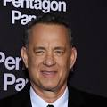
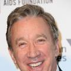
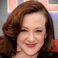

Andy tem 17 anos e está prestes a ir para a faculdade. Desta forma, precisa arrumar o quarto e definir o que irá para o lixo e o que será guardado no sótão. Seus antigos brinquedos, entre eles Buzz Lightyear, Jessie e o Sr. Cabeça de Batata, são separados para serem guardados no sótão. Entretanto, uma confusão faz com que a mãe de Andy os coloque no lixo. Woody, que será levado por Andy para a faculdade, decide salvá-los. O grupo escapa, mas acaba no carro da mãe de Andy. Ela leva a uma creche diversos brinquedos, entre eles Barbie. Ao chegarem, os amigos encontram um universo até então inimaginável, onde os brinquedos sempre têm crianças para brincarem com eles.

Nascido em 9 de julho de 1956 na cidade de Concord, Califórnia. Já foi indicado a 216 prêmios, dos quais venceu 100.

Nascido em 13 de junho de 1953 na cidade de Denver, Colorado. Já foi indicado a 39 prêmios e venceu 25 deles.

Nascida em 11 de outubro de 1962 na cidade de Nova York. Já foi indicada a 33 prêmios e venceu 17 deles.